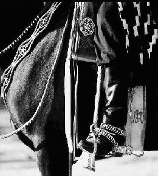

|  | LOCALIZAÇÃOO evento acontece na Chácara Élio Frozza. O acesso é pelo trevo leste do município em direção ao campo de aviação. Aproximadamente 2000 metros de estrada de terra. O evento dispões de amplo estacionameto, seguranças e uma enorme tenda para caso de haver tempo chuvoso. |